📚كل بطاقات الكتاب
11 فصلاً بنفس ترتيب الكتاب — كل بطاقة فيها فيديو وصورة توضيحية.
01
🧠 لوحة الأردوينو
Arduino UNO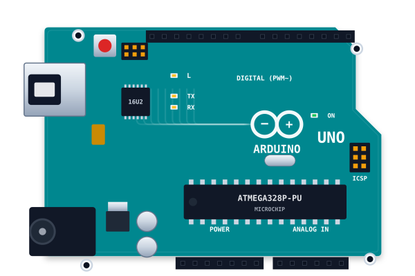
ما هو الأردوينو؟What is Arduino
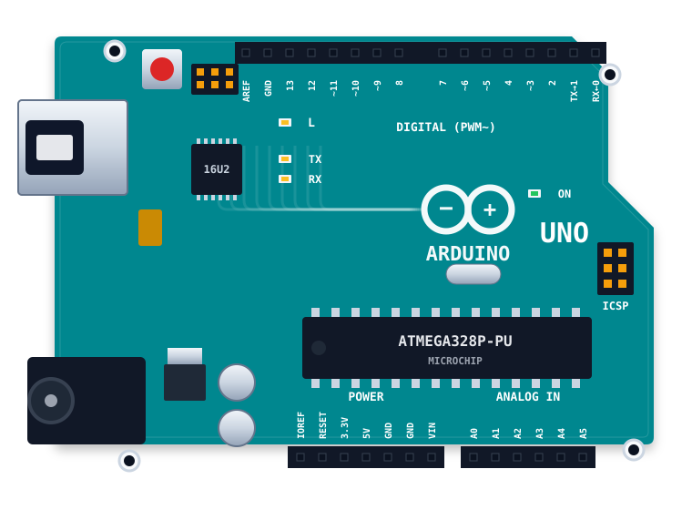
مكوّنات لوحة Arduino UNOArduino UNO anatomy
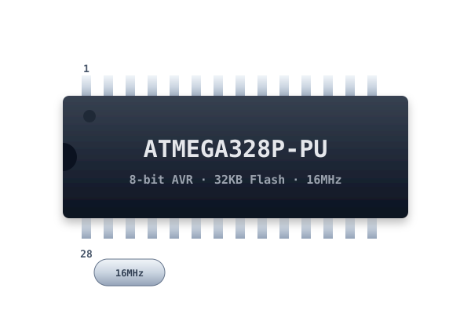
المتحكّم الدقيق ATmega328PMicrocontroller
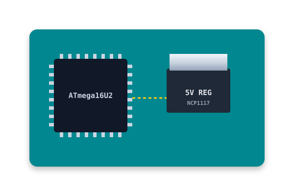
شريحة USB ومنظّم الجهدUSB chip & 5V regulator
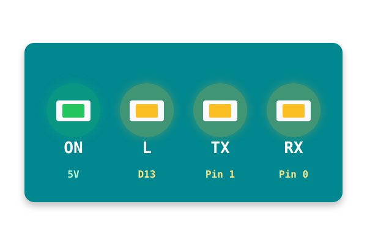
المؤشرات الضوئية ON و LOn-board LEDs

مؤشرا الإرسال والاستقبال TX و RXTX & RX LEDs
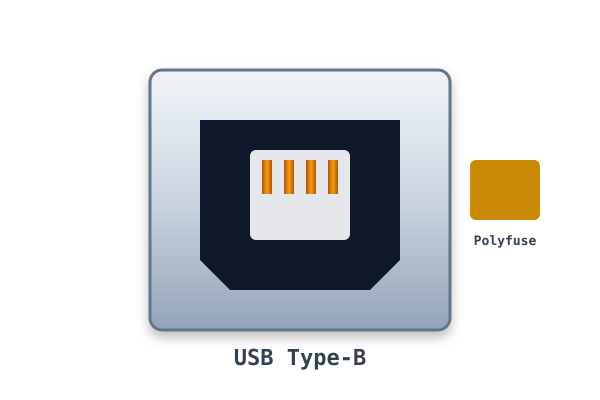
منفذ USBUSB port
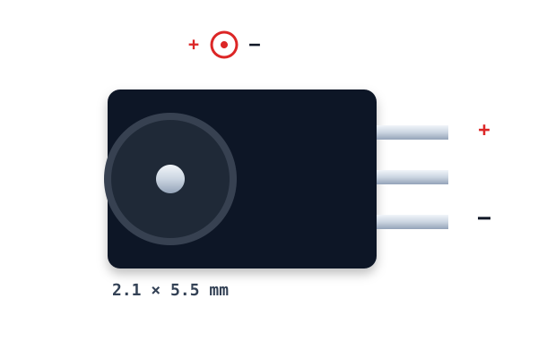
مقبس الطاقة DCDC power jack
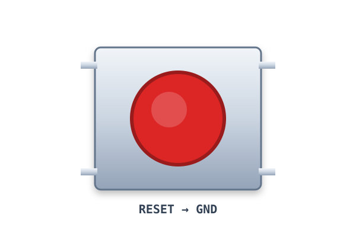
زر إعادة التشغيل ResetReset button
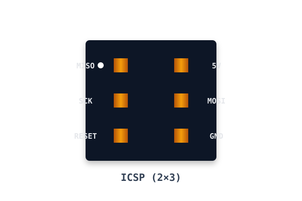
منفذ البرمجة المباشرة ICSPICSP header
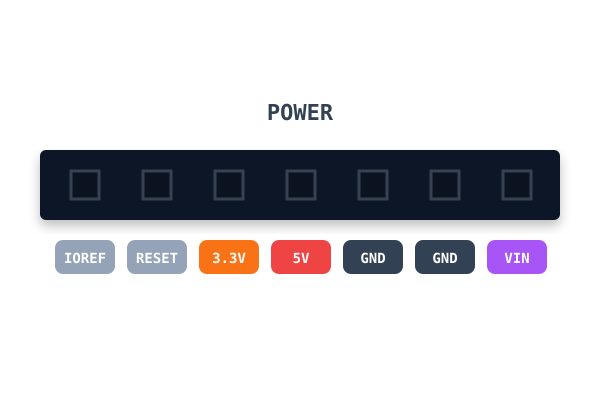
منفذ الطاقة Power HeaderPower header
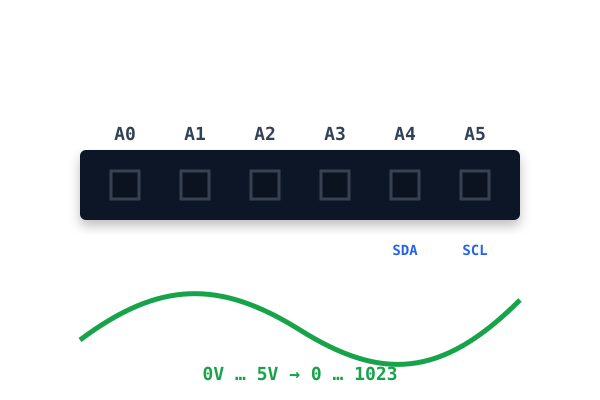
المنافذ التناظرية A0–A5Analog pins
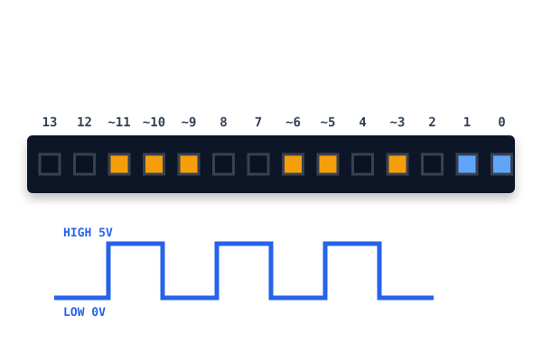
المنافذ الرقمية D0–D13Digital I/O pins
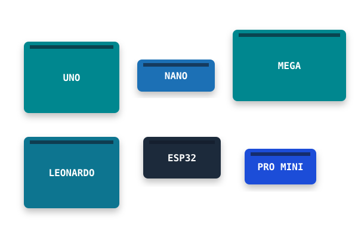
بيئة البرمجة وأنواع لوحات الأردوينوIDE & board types
02
🔊 الصوت
Sound03
💡 الإضاءة
Light
04
⚙️ المحركات
Motors05
🖥️ الشاشات
Displays06
🔋 البطاريات
Batteries07
📡 التواصل عن بعد
Wireless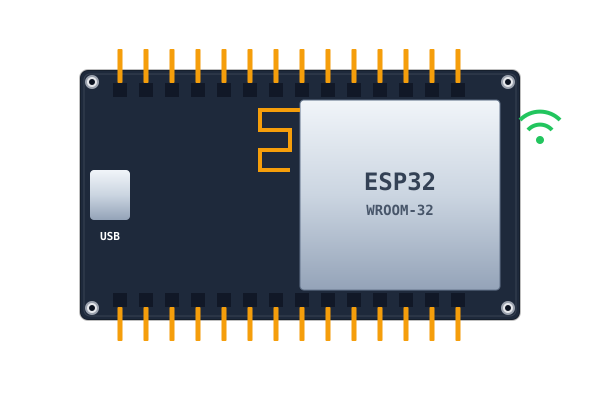
وحدة Wi-Fi (ESP8266 / ESP32)Wi-Fi module
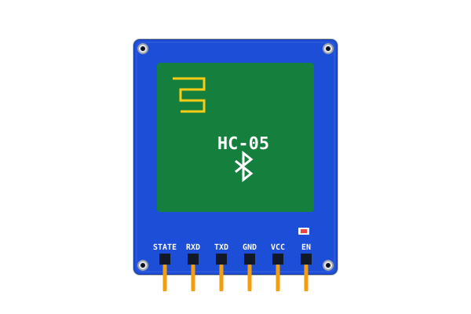
وحدة Bluetooth (HC-05 / HC-06)Bluetooth module
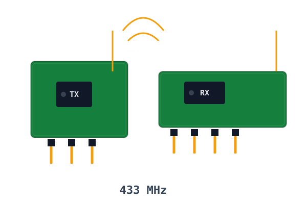
وحدة RF (433MHz)RF 433MHz
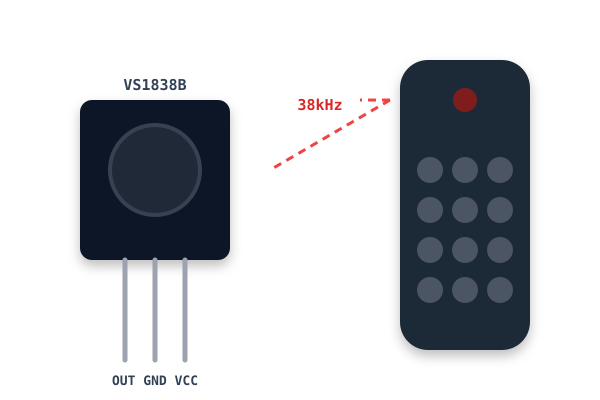
وحدة الأشعة تحت الحمراء IR وبروتوكولات الاتصالIR & protocols
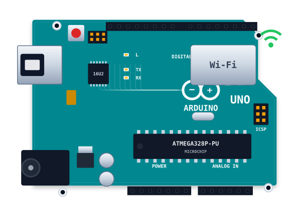
لوحات الأردوينو بالـ Wi-FiWi-Fi Arduino boards
08
🌡️ المستشعرات
Sensors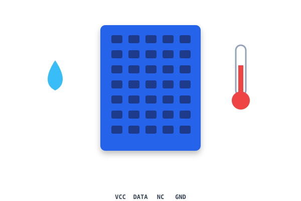
حساس الحرارة والرطوبة (DHT11)DHT11 temp & humidity
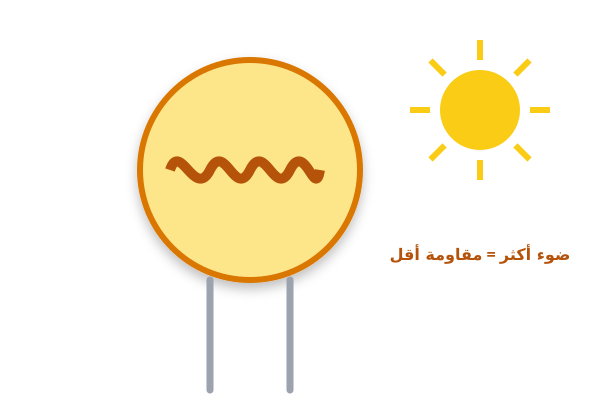
حساس الضوء (LDR)Light sensor LDR
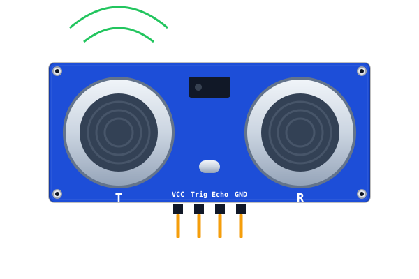
حساس المسافة بالموجات فوق الصوتية (HC-SR04)Ultrasonic HC-SR04
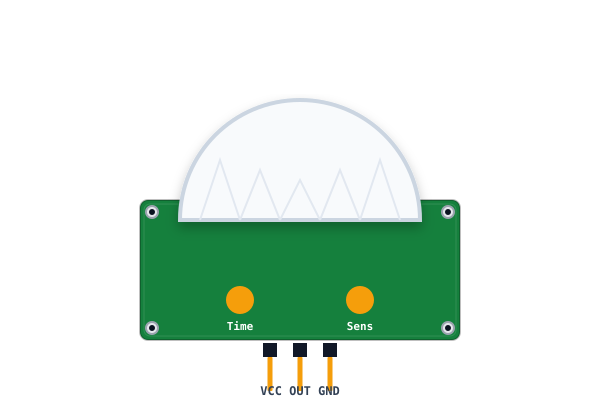
حساس الحركة (PIR)PIR motion sensor
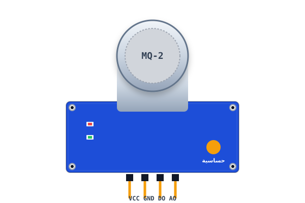
حساس الغاز والدخان (MQ-2)Gas sensor MQ-2
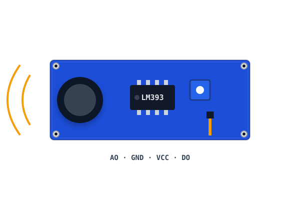
حساس الصوتSound sensor
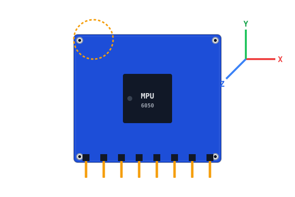
مستشعر التوازن (MPU6050)MPU6050 IMU
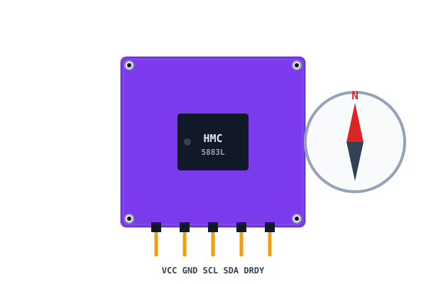
مستشعر المغناطيسية والبوصلة (HMC5883L)Compass HMC5883L
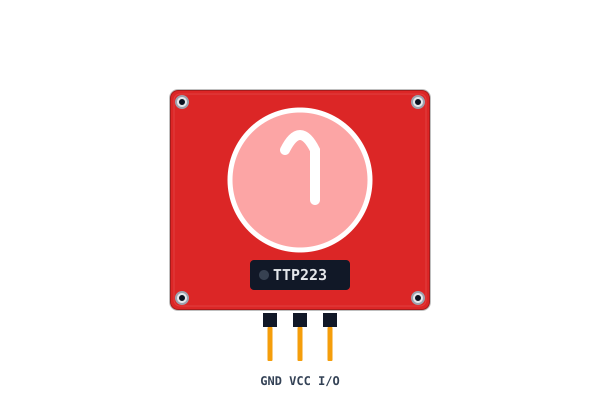
مستشعر اللمس والقربTouch sensor
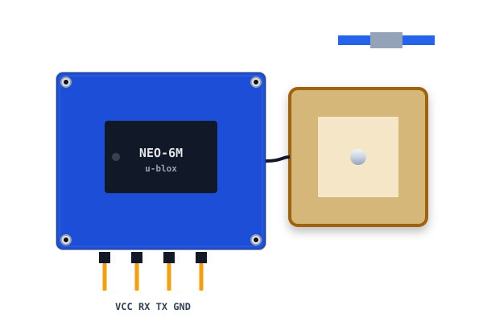
مستشعر GPS ومستشعرات متقدمةGPS module
09
〰️ المقاومة
Resistors10